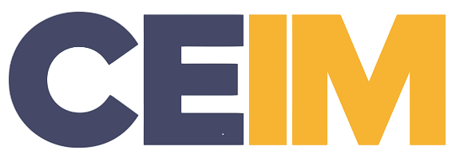

Formación y competencias laboralesCoordinador de Proyectos 3D
Salamanca · Proyecto de acreditación de competencias laboralesEn CEIM, en Salamanca, coordiné una sede vinculada a proyectos de acreditación de competencias para la industria minera. El trabajo reunía participantes, equipos, recursos y muchas tareas que tenían que encontrarse a tiempo.
- Seguimiento de participantes, requerimientos y continuidad operativa del proyecto.
- Coordinación de recursos, equipos, procesos administrativos y apoyo logístico.
- Articulación de necesidades de participantes, jefaturas y organizaciones relacionadas.